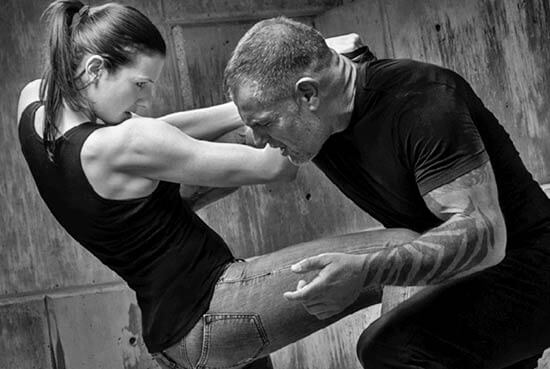
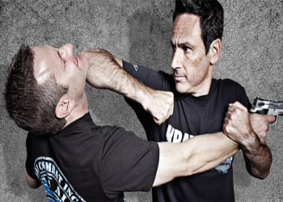

During training the body is taught to endure a tad bit of blunt force to the limbs and extremities just like any mixed martial art. Kicking trees and punching them is one of the best things to hit when wanting to kill sensitive nerves in the hands and legs making the body stronger and more tolerable to pain. On the down side you will never truly regain the feeling if done properly so choose wisely if thinking about this type of abuse some may say.
 